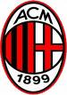
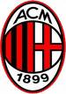

Pagetip
Noen eksempler:
Høgskolen i Østfold
Ligger i to byer: Halden og Fredrikstad.
Ligger i to byer: Halden og Fredrikstad.
Høgskolen i Østfold

Det trenger selvsagt ikke være linker vi illustrerer på denne måten. Dra cursor over linja under:
Ronaldinho og Kaka er to brasilianske fotballspillere som har vært i AC Milan
Ronaldo de Assis Moreira
er født 21. mars 1980 i Porto Alegre, Brasil. Han er bedre kjent som «Ronaldinho» (lille Ronaldo) og blir regnet som en av verdens beste fotballspillere. Navnet Ronaldinho fikk han da han begynte å spille for Brasils landslag, fordi Ronaldo allerede var der. En av fintene Ronaldinho er kjent for kalles elástico, som takket være Rivelino ble populær på 70-tallet [1]. Først drar han ballen den ene veien før han drar den den andre veien, hele tiden mens ballen er klistret til foten hans.
Ricardo Izecson dos Santos Leite
er født 22. april 1982 i Brasília. Han er en brasiliansk fotballspiller. Han spiller for den italienske storklubben AC Milan og på Brasils landslag. Han blir regnet for å være blant verdens beste midtbanespillere, og ble i 2007 kåret til årets spiller av FIFA
Associazione Calcio Milan


Associazione Calcio Milan er en italiensk fotballklubb fra Milano som spiller i Serie A. Milan er en av verdens mest suksessfulle klubber. De har vunnet mesterligaen hele syv ganger – sist i 2007 –, og har 17 Serie A-titler så langt i klubbens historie. Bare Real Madrid har flere mesterligatroféer, mens Juventus er den eneste klubben i Italia som har vunnet flere scudetti (italienske ligamesterskap). Laget spiller sine hjemmekamper på San Siro, en stadion de deler med byrivalene Inter.